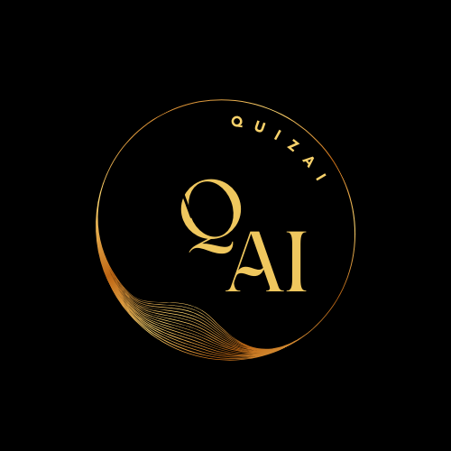

Gaurav Gautam Shakya Already an Engineer, Super pumped to become entrepreneur!
I am an Engineer, Ambitious to engineer some of the world's hardest problems.
My Ultimate Ambition is to Build and run at least one fortune 500 Technology Company.
Desires and Ambitions
Who am I
That's what usually I ask myself. But for now, My name is Gaurav Gautam Shakya and my age is
23
. I am from Villege named Nagla Kunwar Kharbandi nagla Wazir in city Farrukhabad, Uttar Predesh, INDIA. I am an Engineer( but Electrical Engineer by Academics). Working as IT Infrastructure observability Engineer at HCLTECH.Till Now I have not achieved much.Currently, I am an Amateur Artificial intelligence Researcher, Azure Certified AI Engineer and AWS Cloud Practitioner. My expertise particularly in Public Cloud Services, AI and their accessibility opportunities, risks and challenges.I love to talk about disruption in Business and Technology. I believe that Working on Artificial General intelligence is the most rewarding career for me. I am always interested in Physics but went to engineering College. where I was exposed to computer Hardware and software stuff. I fall in love with the Mind-bending Complexity of Computer systems. Then I was intrigued by the question "Why are engineers striving for building such complex systems and Why businesses and spending such big money on these systems". Now I can feel the impact of these complex engineered systems which empowers the individuals, SMBs, Big Business and even some of the world's largest economies. I am very impressed by the people who ask strategically broad questions which give me food for thought. Asking or listening to broad and unconventional questions seems stupid or unnecessary for the first time because of limited resources but they are crucial for setting the vision and existential story of a company. I am looking for someone who is constantly striving to grasp the big picture of company, industry or Economic opportunities over the course of time.
Work


QuizAI
Crafting Quiz with Gemini AI on any Subject, any No. of Questions or without subject matter expertise.
Problem Statement
I have realized that There are lots of people who often have requirements to create the Quiz with limited time and resources. The problem statement is that we need to create application which facilitates quiz creation without human intervention and expert or specialized knowledge. Let's understand problem in more detail by an example. Let say you have requirements to create the Quiz of 20 question, 4 choices for each question. So how much work you need to do. First of all . You have to figure out 20 unique questions. And. Then you have think about 80 choices in which 20 are correct and 60 incorrect. It is quite easy for someone to figure out the correct choice. But Here comes the trickiest part, figuring out incorrect choices are much trickier than correct choices. Why? because this is the only thing which captures the confidence and knowledge of the candidate who makes decisions or series of decision to figure out the correct choice among all the choices. More About QuizAIQuizAI: Solution
Please visit QuizAI
Obituary
Contact
GitHub
To connect, Please Leave Email on grv.shakya0563@gmail.com
Thank you for Comming! I wish you the best to imagine and live better life !